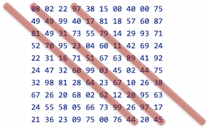
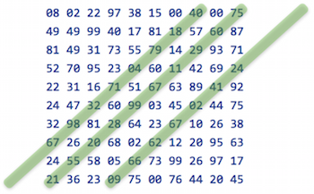

20×20 격자에서 연속된 네 숫자의 곱 중 최대값?
문제 8에서 살펴봤듯이 partition 함수를 사용하면 연속된 숫자를 네 개씩 묶어낼 수 있다.
user=> (partition 4 1 (range 20)) ((0 1 2 3) (1 2 3 4) (2 3 4 5) (3 4 5 6) (4 5 6 7) (5 6 7 8) ...)
문제는 이걸 어떻게 가로(-), 세로(|), 대각선(\), 역대각선(/) 네 방향으로 만들어 내느냐는 것이다. 네 방향으로 숫자 시퀀스를 만들기만 하면 문제를 쉽게 풀 수 있다. 데이터가 다음과 같이 벡터의 벡터(vector of vectors)로 되어 있다고 하자. (vector로 해야 인덱스로 접근할 수 있다.)
(def m [[ 8 2 22 97 38 ...]
[49 49 99 40 17 ...]
[81 49 31 73 55 ...]
[52 70 95 23 4 ...]
[22 31 16 71 51 ...]
...])
가로 방향의 시퀀스는 들어 있는 그대로 접근하면 얻을 수 있다.
(def horizontal m)
세로 방향의 시퀀스는 위 행렬의 전치행렬(transposed matrix)을 구하면 된다. 이 또한 다음과 같이 간단히 구할 수 있다.
(def vertical (apply map list m))
대각선 방향으로 시퀀스를 만들려면 조금 생각을 해야 한다. 대각선 방향의 요소에 대한 인덱스를 보면, 처음 시작 열을 c라 할 때 와 같이 표현할 수 있다.

각 대각선마다 별도 시퀀스를 만들어야 하므로 다음과 같이 중첩 for를 사용해 대각선 요소에 대한 시퀀스를 구할 수 있다. 대각선 아래쪽 삼각형 영역에 위치한 대각선 방향 시퀀스는 시작 열 인덱스를 음수로 하면 얻을 수 있다. 따라서 c의 시작 값은 -rows로 하면 될 듯 하다. 실제로 c가 -rows인 경우는 빈 시퀀스가 되겠지만.
(def diagonal
(let [rows (count m), cols (count (first m))]
(for [c (range (- rows) cols)]
(for [r (range 0 rows) :when (< -1 (+ c r) 20)]
(get-in m [r (+ r c)])))))
역대각선 방향의 시퀀스도 대각선 방향의 시퀀스와 방향만 다를 뿐 방식은 동일하다. 역대각선 방향에서는 행 인덱스가 늘어날 때마다 열 인덱스는 줄어들어야 한다.

여기서는 c의 범위가 0 ~ (rows + cols)가 되어야 한다.
(def anti-diagonal
(let [rows (count m), cols (count (first m))]
(for [c (range 0 (* (+ rows cols)))]
(for [r (range 0 rows) :when (< -1 (- c r) 20)]
(get-in m [r (- c r)])))))
이제 문제를 거의 다 풀었다. 각 방향에 대한 시퀀스를 구했으므로 이걸 다 합친 다음 네 개씩 묶어서 곱한 값의 최대 값을 구하면 된다. 처음 언급한 바와 같이 partition 함수를 사용하면 이 작업을 간단히 할 수 있다. 대각선 및 역대각선 방향의 시퀀스에서는 아이템 개수가 4개 이하인 시퀀스도 있는데 이런 것들은 partition 함수가 다 걸러주므로 별도로 filter를 쓰지 않아도 된다.
(defn solve []
(->> (concat horizontal vertical diagonal anti-diagonal)
(mapcat #(partition 4 1 %))
(map #(apply * %))
(apply max)))
결과는 다음과 같다.
p011=> (time (solve)) "Elapsed time: 1.859183 msecs" 706???74